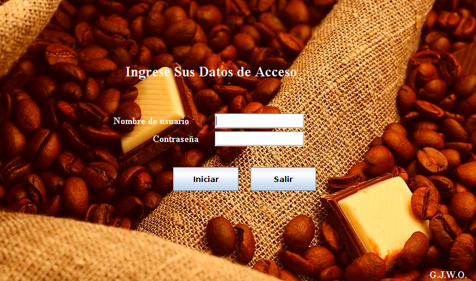
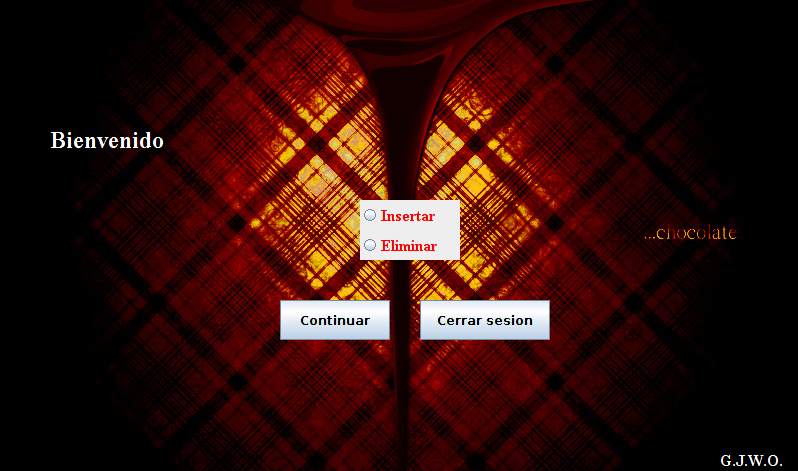
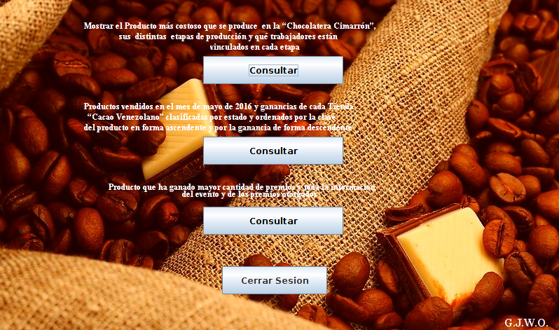

Proyecto de Bases de Datos
Lo primero que aparece al abrir el programa es una ventana de login, en el cual el usuario es el mismo de postgres, este usuario pueder ser tanto administrador como trabajador pero programa se encargara de determinar que tipo de usuario es para el inicio de sesion adecuado.
El primer panel es la interfaz del login, para crear un usuario para acceder se debe crear desde postgres con un usuario que si tenga permisos para crear otros usuarios, y luego asignarle el rol al usuario, el cual puede ser administrador o trabajador.
Al iniciar sesion con un usuario administrador podemos hacer operaciones de insercion y eliminacion.
Si seleccionamos la opcion de Insertar podemos escoger que tipo de elemento vamos a agregar a la base de datos, para luego agregar la informacion acerca de este elemento. Por otro lado, si seleccionamos la opcion de Eliminar podremos de igual forma seleccionar el tipo de elemento a borrar, para luego identificar el objeto con su clave.
Si llegaste hasta aqui podras darte cuenta que el administrador no puede consultar datos pero si puede operar encima de la base de datos, bueno, los trabajadores si pueden realizar operaciones de consulta, aunque en nuestra interfaz tenemos solo tres tipos que son los que nos piden.
Como podemos ver tenemos tres tipos de consultas: